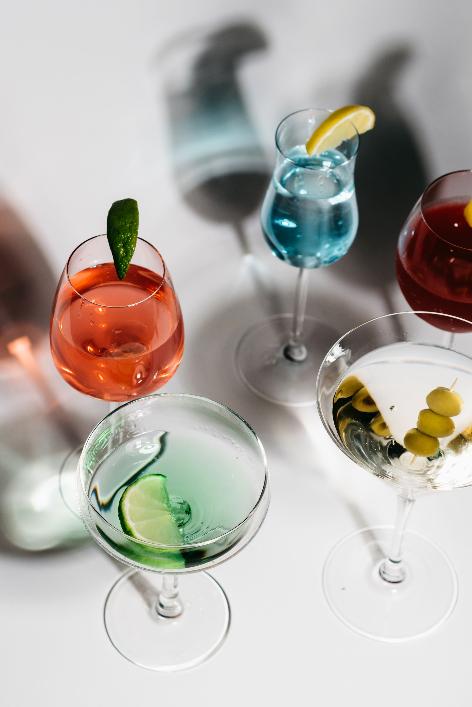
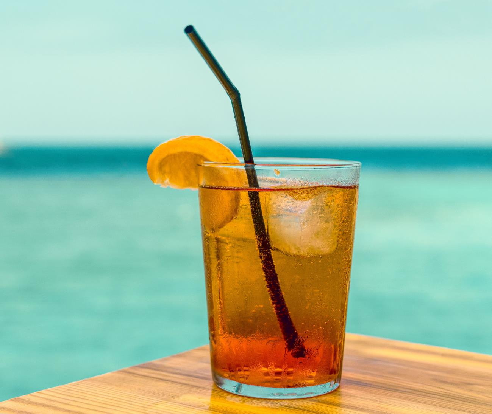
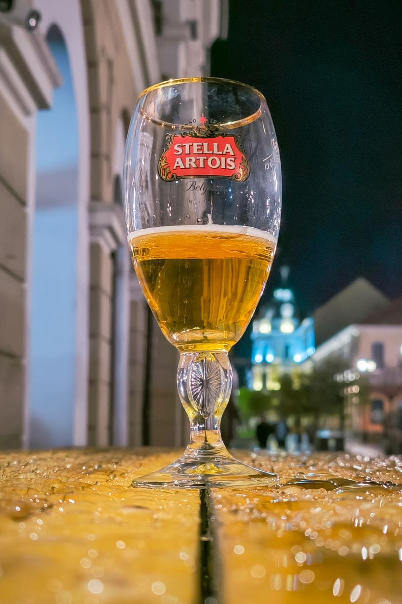
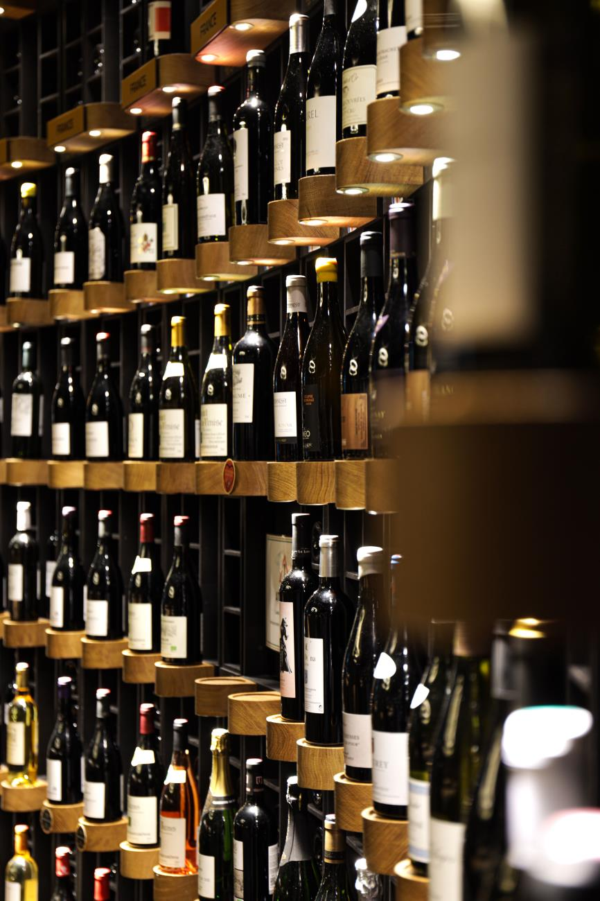

Here is what we suggest you add to your menu this coming festive season:
1. Hard Liquor: Long Island Iced Tea
The cocktail we would call a heavyweight. It is everything put in a cup. Three of these per night are enough, and anything more is to go to war with yourself.

A classic strong cocktail that mixes five spirits with a splash of cola and lemon — tastes like iced tea but isn't.
Long Island Iced Tea
Ingredients
- 15 ml vodka
- 15 ml white rum
- 15 ml gin
- 15 ml triple sec
- 15 ml silver tequila
- 25 ml fresh lemon juice
- 15 ml simple syrup
- 30 ml cola, to top
- 1 lemon wedge, for garnish
Steps
- Fill a highball glass with ice cubes.
- Pour in the vodka, white rum, gin, triple sec, and silver tequila.
- Add the fresh lemon juice and simple syrup.
- Give everything a gentle stir to combine.
- Top with cola — just enough to give it that iced-tea colour.
- Garnish with the lemon wedge and serve immediately.
2. Beer: Traditional and Craft
Beer is the "food" of drinks. Nothing is as delicate as the kiss of a cold brew on a very warm summer day; it is refreshing and delicious. Beer is an affordable choice, often used to bridge the gaps between hard liquor sessions. Too much of it can destroy your summer body: drink wisely.
Perfectly acceptable in the morning, to open your throat, or the one you have before your nightcap — beer is a classic beverage with little demands: keep it cold and you'll be satisfied.
We were pining for the days of one litre Black Label, back when R100 would be a very good half day. Nowadays, we've moved into expanding our palates when it comes to beer. There's absolutely nothing wrong with getting yourself some of the traditional, mass market beers on offer, like a 24 of Stella Artois to keep you cool as you work the braai stand. When life throws you some lemons, we recommend trying your hand at some craft beer. Be careful — some craft beers are expensive and taste like urine or a combination of the two. But don't let that hold you back from having an edge on your beers when it comes to impeccable taste.

3. Wine: Merlot
Red or white wine? Red. Which red wine? Merlot.
Merlot is our wine of choice when it comes to the Battle of the Reds. It is exceptionally smooth, velvety and rich in flavour. This wine challenges the belief that only white wine can pair with seafood. Although that may still be the norm, merlot has proved itself to be an all-rounder — pairing well with many dishes and being ubiquitous year-round.
